<!DOCTYPE html>
<html>
<head>
	<title>UTS GIS MARKER</title>
	<meta charset="utf-8">
	<link rel="stylesheet" type="text/css" href="asset/leaflet/leaflet.css">
	<script src="asset/leaflet/leaflet.js"></script>
	<script src="json/kecpraya.js"></script>
	<style>
		html, body {
			height: 100%;
			width: 100%;
			margin:0;
			padding: 0;
		}
		#map {
			width: 100%;
			height:100%;
		}
		.leaflet-popup-content {
			width:auto !important;
		}

	</style>
</head>
<body>
<div id="map"></div>
<script>


	var mapIcon = L.Icon.extend({
	    iconSize:     [32, 37]
	});
	var masjidIcon = new mapIcon({iconUrl: 'icon/mosquee.png'}),
	    sekolahIcon = new mapIcon({iconUrl: 'icon/school.png'});
	    kecamatanIcon = new mapIcon({iconUrl: 'icon/gbr2.png',  iconSize: [38, 50]});
	    tamanIcon = new mapIcon({iconUrl: 'icon/garden.png'});
	    pasarIcon = new mapIcon({iconUrl: 'icon/market.png'});
	    kesehatanIcon = new mapIcon({iconUrl: 'icon/hospital.png'});
	    pemerintahanIcon = new mapIcon({iconUrl: 'icon/congress.png'});
	    wadukIcon = new mapIcon({iconUrl: 'icon/river-2.png'});

	
	//MARKER MASJID//
	var mj1 = L.marker([-8.70255, 116.26714],{icon: masjidIcon}).bindPopup('Masjid Agung Praya');
	var mj2 = L.marker([-8.71077, 116.27883],{icon: masjidIcon}).bindPopup('Masjid Jami');
	var mj3 = L.marker([-8.6965725, 116.2826282],{icon: masjidIcon}).bindPopup('Masjid Al-Istikomah');
	var mj4 = L.marker([-8.6981617, 116.2854233],{icon: masjidIcon}).bindPopup('Masjid Darul Mutaqin');

	var masjid = L.layerGroup([mj1, mj2, mj3, mj4]);

	//MARKER SEKOLAH//
	var sk1 = L.marker([-8.69835, 116.28224],{icon: sekolahIcon}).bindPopup('STMIK Lombok');
	var sk2 = L.marker([-8.69777, 116.28200],{icon: sekolahIcon}).bindPopup('YANMU Praya');

	var sekolah = L.layerGroup([sk1, sk2]);


	//MARKER KECAMATAN//
	var mk1= L.marker([-8.6128812, 116.3103311], {icon: kecamatanIcon})
        .bindPopup('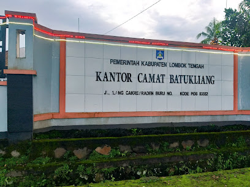<br>Kantor Camat Batukliang</br><br>Aik Dareq, Kec. Batukliang, Kabupaten Lombok Tengah, Nusa Tenggara Bar. 83352</br>').openPopup();

    var mk2 = L.marker([-8.588949, 116.3245473], {icon: kecamatanIcon})
        .bindPopup('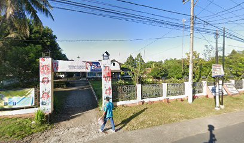<br>Kantor Camat Batukliang Utara</br><br>Teratak, Kec. Batukliang Utara, Kabupaten Lombok Tengah, Nusa Tenggara Bar. 83552</br>').openPopup();

    var mk3 = L.marker([-8.6942821, 116.3995881], {icon: kecamatanIcon})
        .bindPopup('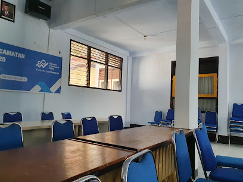<br>Kantor Camat Janapria</br><br>Janapria, Kec. Janapria, Kabupaten Lombok Tengah, Nusa Tenggara Bar. 83554</br>').openPopup();

    var mk4 = L.marker([-8.6525193, 116.1979991], {icon: kecamatanIcon})
        .bindPopup('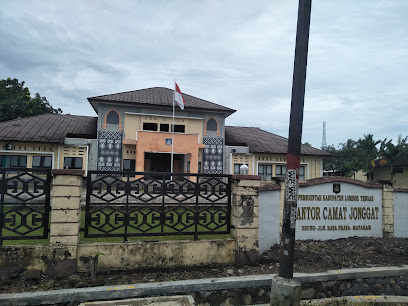<br>Kantor Camat Jonggat</br><br>Ubung, Kec. Jonggat, Kabupaten Lombok Tengah, Nusa Tenggara Bar. 83362</br>').openPopup();

    var mk5= L.marker([-8.6343426, 116.3548378], {icon: kecamatanIcon})
        .bindPopup('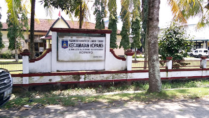<br>Kantor Camat Kopang</br>').openPopup();

    var mk6 = L.marker([-8.7237617, 116.2390471],{icon: kecamatanIcon}).bindPopup('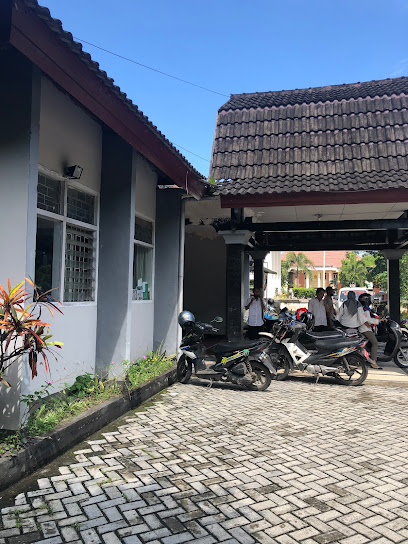<br>Kantor Camat Praya</br> <br>Praya, Kec. Praya, Kabupaten Lombok Tengah, Nusa Tenggara Bar. 83511</br>').openPopup();
       
    var mk7 = L.marker([-8.742301, 116.2410837], {icon: kecamatanIcon})
        .bindPopup('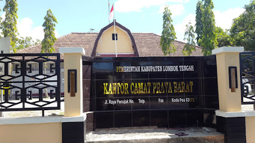<br>Kantor Camat Praya Barat</br><br>Penujak, Kec. Praya Bar., Kabupaten Lombok Tengah, Nusa Tenggara Bar. 83572</br>').openPopup();
    
    var mk8 = L.marker([-8.7385415, 116.2015728], {icon: kecamatanIcon})
        .bindPopup('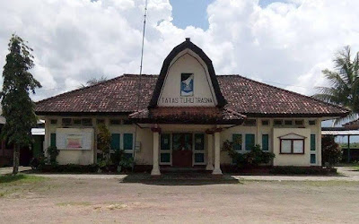<br>Kantor Camat Praya Barat Daya</br><br>Jl. Lintas Bend., Darek, Kec. Praya Bar. Daya, Kabupaten Lombok Tengah, Nusa Tenggara Bar. 83571</br>').openPopup();

    var mk9 = L.marker([-8.7340447, 116.316331],{icon: kecamatanIcon})
        .bindPopup('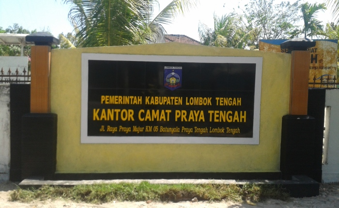<br>Kantor Camat Praya Tengah</br><br>Jl. Raya Praya - Mujur No.45, Batunyala, Kec. Praya Tengah, Kabupaten Lombok Tengah, Nusa Tenggara Bar. 83582</br>').openPopup();

    var mk10= L.marker([-8.7614541, 116.3561055],{icon: kecamatanIcon})
        .bindPopup('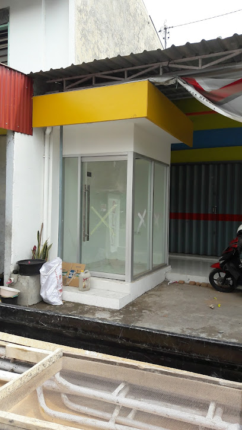<br>Kantor Camat Praya Timur</br><br>Jl. Raya Praya - Mujur, Mujur, Kec. Praya Tim., Kabupaten Lombok Tengah, Nusa Tenggara Bar. 83581</br>').openPopup();

    var mk11 = L.marker([-8.6190565, 116.2517066], {icon: kecamatanIcon})
        .bindPopup('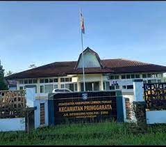<br>Kantor Camat Pringgarata</br><br>Jl. Diponegoro No.40, Pringgarata, Kec. Pringgarata, Kabupaten Lombok Tengah, Nusa Tenggara Bar. 83562</br>').openPopup();
                
    var mk12 = L.marker([-8.8004563, 116.292598], {icon: kecamatanIcon})
        .bindPopup('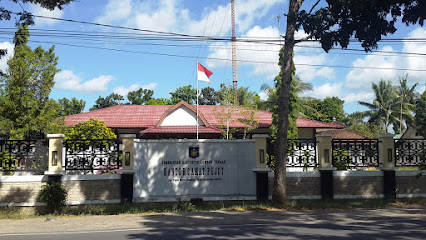<br>Kantor Camat Pujut</br><br>Sengkol, Pengembur, Pujut, Sengkol, Lombok Tengah, Kabupaten Lombok Tengah, Nusa Tenggara Bar. 83573</br>').openPopup();
        var kecamatan = L.layerGroup([mk1,mk2,mk3,mk4,mk5,mk6,mk7,mk8,mk9,mk10,mk11,mk12]);


        //MARKER KESEHATAN//
    var mrs1 = L.marker([-8.7019832, 116.2958626],{icon: kesehatanIcon}).bindPopup('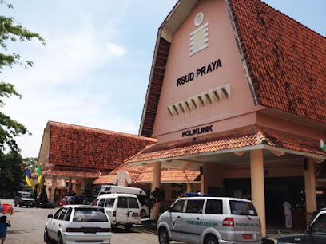<br>RSUD PRAYA</br> <br>Jl. H Lalu Hasim, Tiwugalih, Praya, Central Lombok Regency, West Nusa Tenggara 83511</br>').openPopup();

    var mrs2 = L.marker([-8.7060444, 116.2726082], {icon: kesehatanIcon})
        .bindPopup('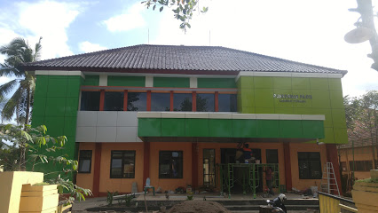<br>Puskesmas Praya</br><br>Semayan, Kec. Praya, Kabupaten Lombok Tengah, Nusa Tenggara Bar. 83511</br>').openPopup();
        var kesehatan = L.layerGroup([mrs1,mrs2]);


        //MARKER TAMAN BERMAIN//
    var mt1 = L.marker([-8.7045539, 116.2712998], {icon: tamanIcon})
        .bindPopup('<br>Alun-Alun Tastura</br><br>Jl. Ahmad Yani, Praya, Kec. Praya, Kabupaten Lombok Tengah, Nusa Tenggara Bar. 83511</br>').openPopup();

    var mt2 = L.marker([-8.7139106, 116.2869397], {icon: tamanIcon})
        .bindPopup('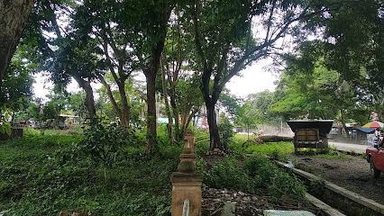<br>Taman Biao</br><br>Jl. Pejanggik No.33, Semayan, Kec. Praya, Kabupaten Lombok Tengah, Nusa Tenggara Bar. 83518</br>').openPopup();
        var taman = L.layerGroup([mt1,mt2]);

	//MARKER PASAR//
	var psr1 = L.marker([-8.69415, 116.26584],{icon: pasarIcon}).bindPopup("Pasar Renteng 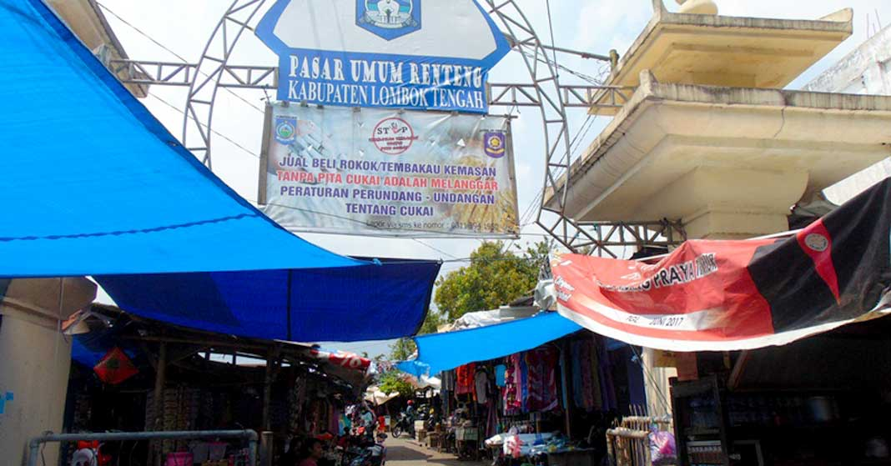");
	var psr2 = L.marker([-8.71188, 116.28291],{icon: pasarIcon}).bindPopup("Karang Bualayak 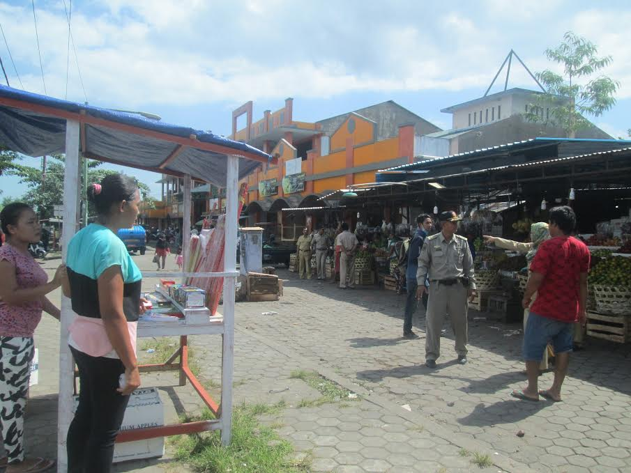");

	var pasar = L.layerGroup([psr1, psr2]);

	var mp1= L.marker([-8.7061917, 116.2691035], {icon: pemerintahanIcon})
        .bindPopup('<br>Kantor bupati LOteng</br><br>Aik Dareq, Kec. Batukliang, Kabupaten Lombok Tengah, Nusa Tenggara Bar. 83352</br>').openPopup();

	//MARKER PEMERINTAHAN// 
    var mp2= L.marker([-8.7053406,116.2672301], {icon: pemerintahanIcon})
        .bindPopup('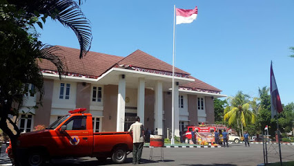<br>Pengadilan Negeri Praya</br><br>Jl. Diponegoro No.2, Praya, Kec. Praya, Kabupaten Lombok Tengah, Nusa Tenggara Bar. 835112</br>').openPopup();

    var mp3= L.marker([-8.7048987,116.2706234], {icon: pemerintahanIcon})
        .bindPopup('<br>Pengadilan Agama Praya</br><br>Jl. Ahmad Yani No.3, Praya, Kec. Praya, Kabupaten Lombok Tengah, Nusa Tenggara Bar. 60253</br>').openPopup();

    var mp4= L.marker([-8.6884876,116.3207126], {icon: pemerintahanIcon})
        .bindPopup('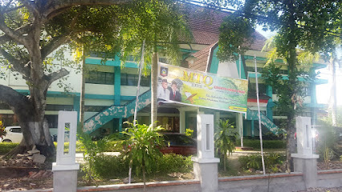<br>Kantor PDE Arsip Dan Dokumentasi</br><br>Jl. Ahmad Yani No.2, Praya, Kec. Praya, Kabupaten Lombok Tengah, Nusa Tenggara Bar. 83511</br>').openPopup();
    var pemerintahan = L.layerGroup([mp1, mp2, mp3,mp4]);


        //MARKER WADUK//
    var mw1= L.marker([-8.7320897,116.2726254], {icon: wadukIcon})
        .bindPopup('<br>Bendungan Batujai Praya</br><br> Batujai, Kec. Praya Bar., Kabupaten Lombok Tengah, Nusa Tenggara Bar. 83519</br>').openPopup();

    var mw2= L.marker([-8.7575494,116.1880415], {icon: wadukIcon})
        .bindPopup('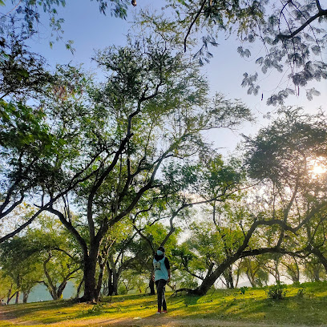<br>Bendungan Pengge</br><br>Jl. Kabul - Plambik, Pelambik, Kec. Praya Bar. Daya, Kabupaten Lombok Tengah, Nusa Tenggara Bar. 83571</br>').openPopup();
        var waduk = L.layerGroup([mw1, mw2,]);


//var popupRenteng = "";


	//##############################################//
	// Membuat BaseMap Pada Peta
	//##############################################//

	var mbAttr = 'Map data &copy; <a href="https://www.openstreetmap.org/">OpenStreetMap</a> contributors, ' +
			'<a href="https://creativecommons.org/licenses/by-sa/2.0/">CC-BY-SA</a>, ' +
			'Imagery © <a href="https://www.mapbox.com/">Mapbox</a>',
		mbUrl = 'https://api.tiles.mapbox.com/v4/{id}/{z}/{x}/{y}.png?access_token=pk.eyJ1IjoibWFwYm94IiwiYSI6ImNpejY4NXVycTA2emYycXBndHRqcmZ3N3gifQ.rJcFIG214AriISLbB6B5aw';

	var streets  = L.tileLayer(mbUrl, {id: 'mapbox.streets',   attribution: mbAttr});

	//##############################################//
	// Mendeklarasikan Peta kedalam Id Map
	//##############################################//
	var map = L.map('map', {
		center: [-8.6416479, 116.3522657],
		zoom: 11,
		layers: [streets]
	});

	//##############################################//
	// Mendeklarasikan BaseLayer Pada Map yakni Street
	//##############################################//
	var baseLayers = {
		"Streets": streets
	};


		
	
	var batukliangutara = L.geoJSON([btklu], {
		style:function(feature){
			return feature.properties && feature.properties.style;
		}
	});
	var batukliang = L.geoJSON([btkl], {
		style:function(feature){
			return feature.properties && feature.properties.style;
		}
	});
	var kopang = L.geoJSON([kpg], {
		style:function(feature){
			return feature.properties && feature.properties.style;
		}
	});
	var janapria = L.geoJSON([jnp], {
		style:function(feature){
			return feature.properties && feature.properties.style;
		}
	});
	var jonggat = L.geoJSON([jgt], {
		style:function(feature){
			return feature.properties && feature.properties.style;
		}
	});

	var pringarata = L.geoJSON([pggt], {
		style:function(feature){
			return feature.properties && feature.properties.style;
		}
	});
	var praya = L.geoJSON([praya], {
		style:function(feature){
			return feature.properties && feature.properties.style;
		}
	});
	var prabarda = L.geoJSON([prabarda], {
		style:function(feature){
			return feature.properties && feature.properties.style;
		}
	});
	var prabar = L.geoJSON([prabar], {
		style:function(feature){
			return feature.properties && feature.properties.style;
		}
	});

	var prateng = L.geoJSON([prateng], {
		style:function(feature){
			return feature.properties && feature.properties.style;
		}
	});
	var pratim = L.geoJSON([pratim], {
		style:function(feature){
			return feature.properties && feature.properties.style;
		}
	});
	var pujut = L.geoJSON([pjt], {
		style:function(feature){
			return feature.properties && feature.properties.style;
		}
	});
	//##############################################//
	// Deklarasi untuk memilih Icon yang akan ditampilkan
	//##############################################//
	var overlays = {
		"Masjid": masjid,
		"Sekolah": sekolah,
		"Pasar" : pasar,
		"kecamatan" : kecamatan,
		"taman" : taman,
		"kesehatan" : kesehatan,
		"pemerintahan" : pemerintahan,
		"waduk" : waduk,
		// "Kelurahan Praya ": kelpraya,
		// "Kelurahan Leneng": leneng,
		// "Keluranan Prapen": prapen,
		// "Keluranan Panjisari": panjisari,
		// Kecamatan
		"Kec. Batuklaiang Utara": batukliangutara,
		"Kec. Batuklaiang": batukliang,
		"Kec. Kopang": kopang,
		"Kec. Janapria": janapria,
		"Kec. Pringarata": pringarata,
		"Kec. Jonggat": jonggat,
		"Kec. Praya": praya,
		"Kec. Praya Barat Daya": prabarda,
		"Kec. Praya Barat": prabar,
		"Kec. Praya Tengah": prateng,
		"Kec. Praya Timur": pratim,
		"Kec. Pujut": pujut,
	};

	//##############################################//
	// Menambah  variabel baselayaer dan overlay kedalam map
	//##############################################//
	L.control.layers(baseLayers, overlays).addTo(map);

	//##############################################//
	// Menbambil data geospesial wilayak kecamatan praya
	//##############################################//
	L.geoJSON([btskab], {
		style: function (feature) {
			return feature.properties && feature.properties.style;
		}
	}).addTo(map);
</script>
</body>
</html>